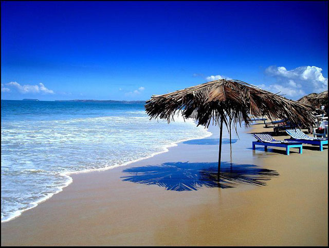
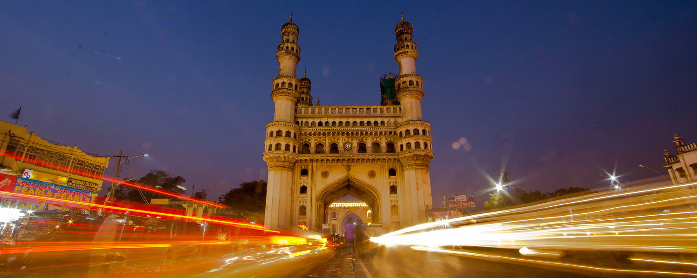
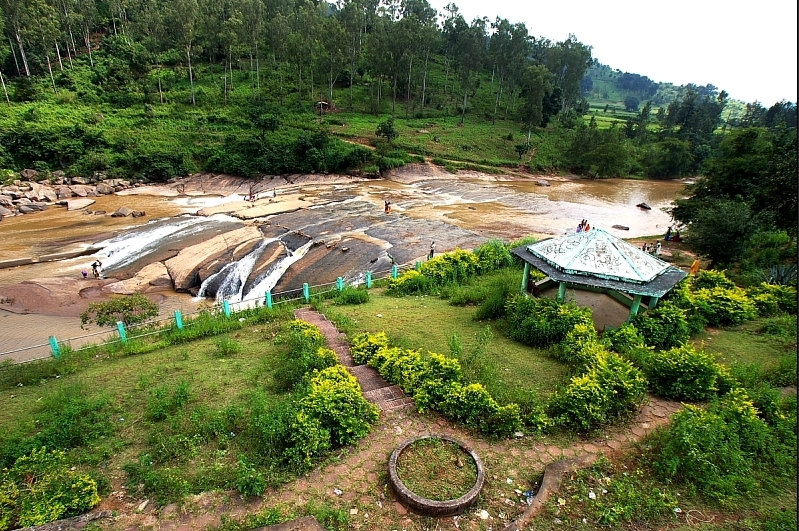

Goa is a state in western India with coastlines stretching along the Arabian Sea. Its long
history as a Portuguese colony prior to 1961 is evident in its preserved 17th-century churches
and the area’s tropical spice plantations. Goa is also known for its beaches, ranging from
popular stretches at Baga and Palolem to those in laid-back fishing villages such as
Agonda.

Hyderabad is the capital of southern India's Telangana state.A major center
for
the technology industry, it's home to many upscale restaurants and shops. Its historic sites
include
Golconda Fort, a former diamond-trading center that was once the Qutb Shahi dynastic
capital.
The
Charminar, a 16th-century mosque whose 4 arches support towering minarets, is an old city
landmark
near the long-standing Laad Bazaar.

Araku Valley is a hill station and valley region in the southeastern Indian state of
Andhra Pradesh. It's surrounded by the thick forests of the Eastern Ghats mountain
range. The Tribal Museum is dedicated to the area's numerous indigenous tribes, known
for their traditional Dhimsa dance, and showcases traditional handicrafts. A miniature
train runs through Padmapuram Gardens, with its sculptures and tree-top huts.

Kerala, a state on India's tropical Malabar Coast, has nearly 600km of Arabian Sea
shoreline. It's known for its palm-lined beaches and backwaters, a network of canals. Inland are
the Western Ghats, mountains whose slopes support tea, coffee and spice plantations as well as
wildlife. National parks like Eravikulam and Periyar, plus Wayanad and other sanctuaries, are
home to elephants, langur monkeys and tigers.